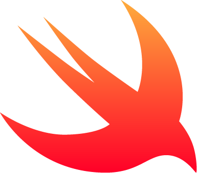

Go
Combina la eficiencia y rendimiento de lenguajes como C con la simplicidad y productividad de lenguajes modernos
La posición en el ranking de stack overflow es 11
Java
Java es un lenguaje de programación ampliamente utilizado para codificar aplicaicones web.
La posición en el ranking de stack overflow es 8
C++
La intensión de su creación fue extender al lenguaje de programación C y añadir mecanismos que permiten la manipulación de objetos
La posición en el ranking de stack overflow es 10
JAVA SCRIPT
JavaSript es una de las tecnologías fundamentas de la WWW, junto con HTML y CSS
La posición en el ranking de stack overflow es 1
Switf
Es un lenguaje multiparadigma (orientado a objeots, funcional y genérico) creado para desarrollar software en plaaformas Apple: iOS, macOS, tvOs, watchOS, e incluso visionOS
la posisicón en el ranking de tack overflow es 16
TYPESCRIPT
typeScript es un lenguaje de programación de código abierto, lanzado en 2012 por microsoft. Está diseñado para desarrollar aplicaicones en el lado del cliente y servidor.
La posición en el ranking de stack overflow es 6